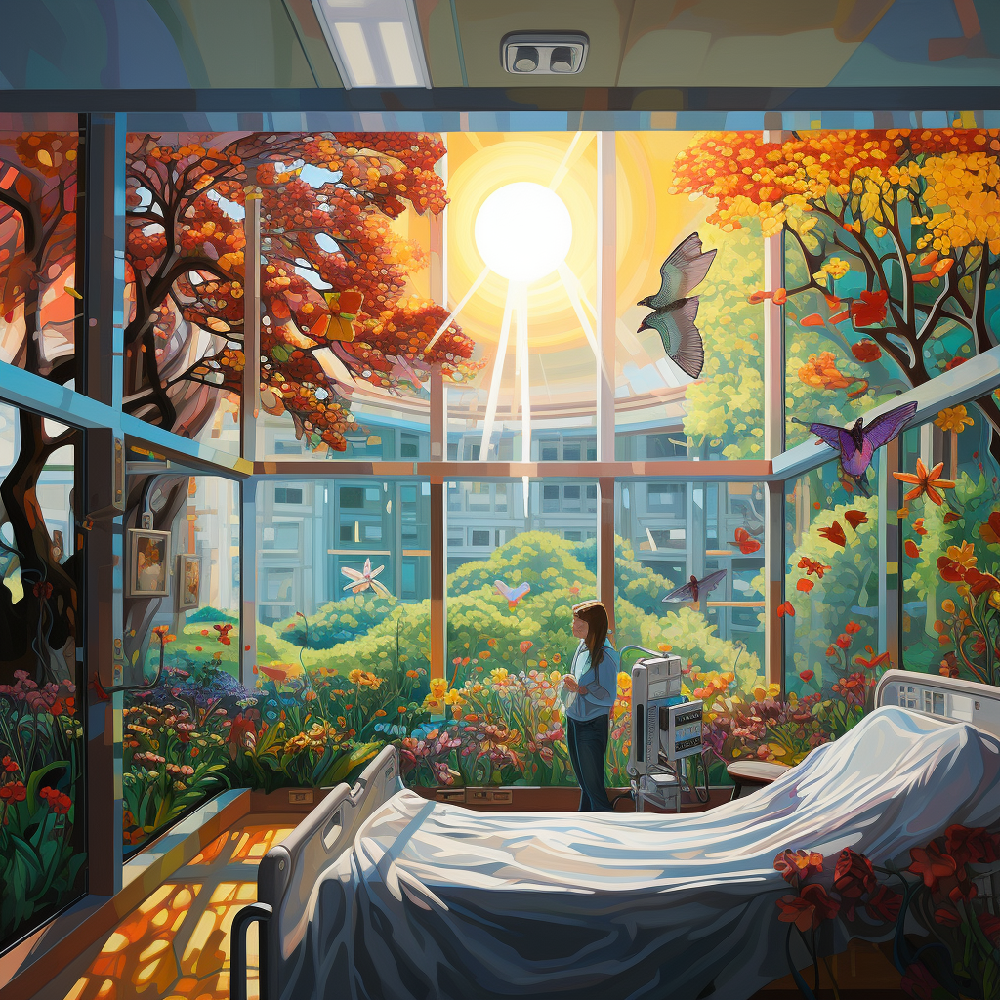

Coordination in a hospital is hard.
But it doesn't have to be.
Increase Patient Satisfaction
Increase Clinician Engagement
Increase Hospital Profit Margin
with a single tool.
Learn more
But it doesn't have to be.
Increase Patient Satisfaction
Increase Clinician Engagement
Increase Hospital Profit Margin
with a single tool.
Learn more

There are hundreds of tasks performed in a hospital department every single day. Currently most of them are managed informally, verbally, in text and beepers. It creates an overload on the clinicians, it wastes patients time and it leaves room for errors.
VeraMed improves and simplifies task management around patient care by offloading it into an easy to use app, built with well understood best practices. Digitizing task management saves time for patients, clinicians and the hospital at large.
VeraMed improves and simplifies task management around patient care by offloading it into an easy to use app, built with well understood best practices. Digitizing task management saves time for patients, clinicians and the hospital at large.
For Clinicians
Increase engagement by focusing on what matters - caring for patients

For Patients
Reduce wait time and increase trust by improving team syncronization

For Hospitals
Increase net profit margin by reducing length of stay and improving efficiency